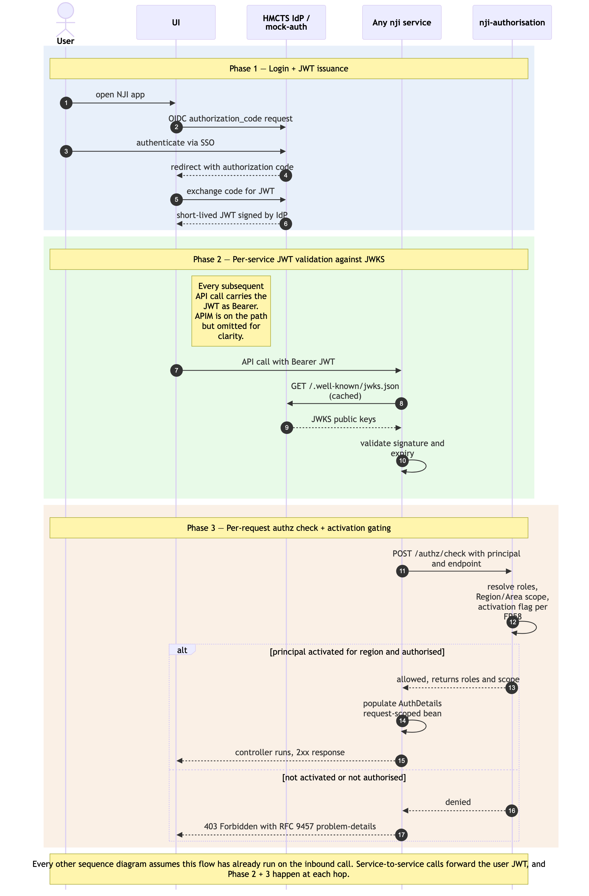

User authentication + per-request authorisation
Sequence diagram of the cross-cutting authentication and per-request
authorisation flow that underpins every user-initiated interaction in
NJI. A user authenticates once at the HMCTS IdP (or
nji-mock-auth in non-prod); the issued JWT is then
forwarded by the UI on every subsequent API call. Each backend service's
custom JWTFilter validates the token against the issuer's
JWKS endpoint and asks nji-authorisation to resolve the
principal's roles, Region/Area scope, and per-region activation flag
before the controller is allowed to run.
This is the cross-cutting flow that the other sequence diagrams (./absence-to-reconciliation.md,
./payment-batch-flow.md,
./judge-onboarding-and-sitting-generation.md,
./salaried-sitting-confirmation.md,
./itinerary-federated-read.md,
./mi-feed-and-reports-consumption.md,
./admin-maintenance-flows.md)
explicitly omit for clarity. Read this diagram once; treat it as
implicit on every API call shown in the others.
Three phases: (1) login + JWT issuance; (2) per-service JWT
validation against JWKS; (3) per-request authz/check
resolving roles + scope + activation flag.
Not in this diagram
- Service-principal authentication for batch
components —
nji-payment-batchuses OAuthclient_credentialsrather than the human SSO flow. See./payment-batch-flow.mdPhase 1. - Mock-auth internal mechanics (signing keys, token issuance, JWKS publication) — implementation detail. The mock-auth surface is OIDC-conformant; how it produces tokens is out of scope here.
- Token refresh / expiry handling in the UI — standard OIDC behaviour; not NJI-specific.
- Sign-out — clears the local session; not a server-side flow worth diagramming.
Cross-cutting steps omitted for clarity
- All UI → service calls flow through Azure API Management. APIM is
omitted from the arrows below; assume every UI → service arrow passes
through it (rate-limit policies, header injection,
/actuator/*restriction). - The two UIs (
nji-uiandnji-admin-ui) follow the same auth pattern. The diagram uses "UI" generically.

Source: ./user-authentication-and-authorisation.mmd
(Mermaid). Regenerate with
mmdc -i user-authentication-and-authorisation.mmd -o user-authentication-and-authorisation.png -w 2400 -s 2 --backgroundColor white.
Phase summary
| Phase | Driver | Architectural rule | Outcome |
|---|---|---|---|
| 1 — Login + JWT issuance | User | OIDC authorization_code against HMCTS IdP (mock-auth in
non-prod) |
UI holds a short-lived JWT for the session |
| 2 — Per-service JWT validation | Any backend service | Custom JWTFilter validates JWT signature against
issuer's JWKS endpoint (cached per service) |
Token integrity + expiry verified before any controller logic runs |
| 3 — Per-request authz check | Any backend service | JWTFilter calls nji-authorisation
POST /authz/check; resolves principal → roles + Region/Area
scope + auth_user_activation_flags (FR58); populates
request-scoped AuthDetails bean |
Controller method invoked with authorised principal in scope; or 403 if not active for the region |
Where to find more detail
| Detail | Location |
|---|---|
| Authentication & Security model (JWT propagation pattern, JWKS validation, mock-auth in non-prod, HMCTS IdP in production) | ../../architecture.md
→ Step 4 Authentication & Security |
JWTFilter per-service implementation pattern and
AuthDetails request-scoped bean |
../starter-template.md →
Per-service NJI Conventions; ../repo-structure.md
per-service config/JWTFilter.java,
config/AuthDetails.java |
Authorisation tables (auth_users,
auth_roles, auth_user_roles,
auth_user_region_scopes,
auth_user_activation_flags) |
../data-tables.md |
| FR1, FR2, FR3 (Identity & Authorisation) and NFR12 (revised v2.6), NFR13 | PRD FR1–FR3, NFR12,
NFR13 |
| Per-region phased activation (FR58) and the wave-cutover semantics it enforces | PRD FR58; ../../architecture.md → Step
4 Deployment topology |
| Mock-auth scope and production-issuer open question | ../gaps.md G1.1, G1.2,
G7.1 |
Two-UI repo split (both nji-ui and
nji-admin-ui follow the same pattern) |
../../architecture.md
→ Step 4 Frontend Architecture — v2.10 |
Source: _bmad-output/planning-artifacts/architecture/sequence-diagrams/user-authentication-and-authorisation.md